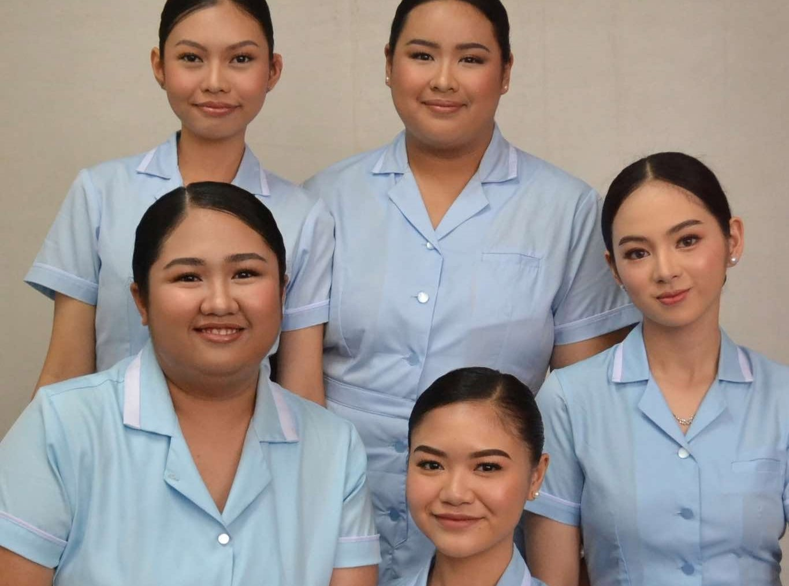
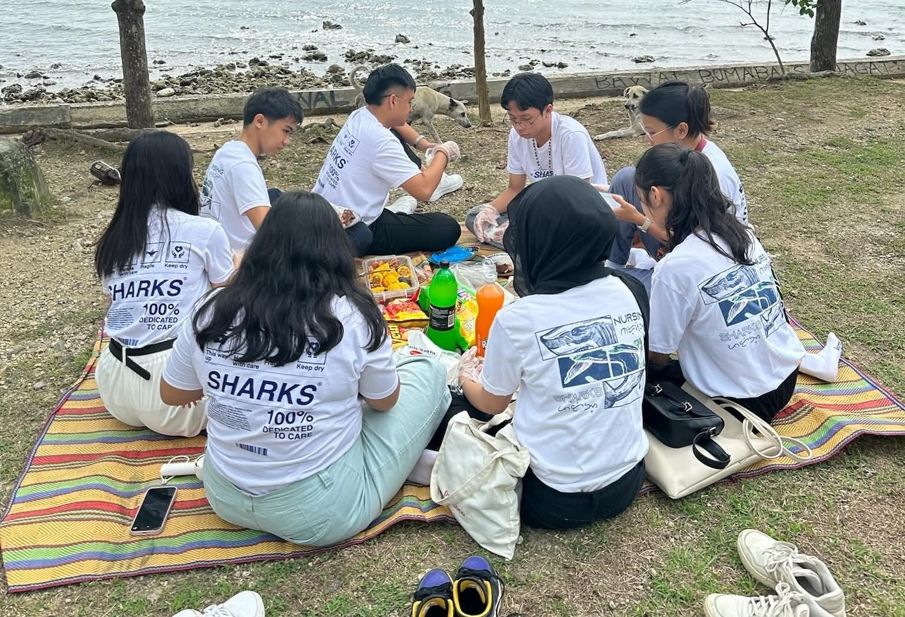
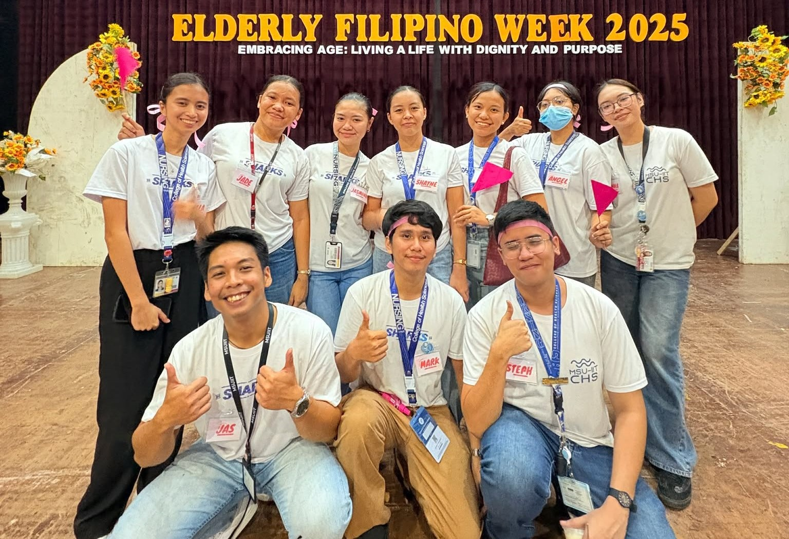

CHAPTER 03
The chapter that challenged me, changed me, and helped me discover myself.
MY COLLEGE YEARS
My college journey has been filled with challenges, growth, and many unforgettable experiences. Through classes, clinical duties, friendships, and countless stressful days, I have learned more about myself and the person I want to become.
🏫 School: MSU-IIT
🩺 Course: Bachelor of Science in Nursing
🎓 Year: 4th Year
📍 Location: Iligan City
Starting a new chapter and learning what it means to become a nursing student.
Building my foundation, facing new challenges, and slowly gaining confidence.
Experiencing more clinical duties and learning from both patients and the people around me.
Looking back at how far I have come while preparing for the next chapter of my journey.
College would not have been the same without the friends and duty groups who became part of this journey.



I am especially grateful for the people who have been there through stressful days, long hours, laughter, and countless memories. They made the journey more meaningful and reminded me that I never had to go through it alone.